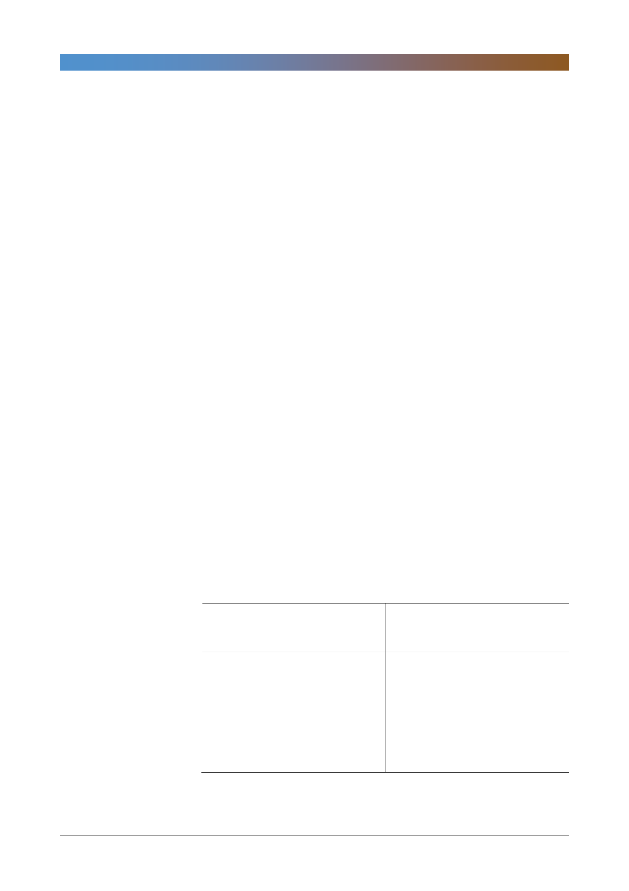

삼성화재(000810)
- 온라인 채널 성장에 따른 사업비절감으로 일부 손해율 상쇄 효과
- 향후 손해율 악화 예상되어서 이를 고려한 전략을 추진할 것
6. 작년/올해 추가상각비 수치 및 올해 목표는?
- ‘17년도 추가상각 2,227억. 올해는 3,000억 정도 될 것.
7. 자동차보험 온라인 채널 늘리는 이유가 사업비 절감효과 때문인데, 온라인 채
널이 얼마나 더 커질 수 있고, 규모 성장 대비 사업비 절감효과는?
- 온라인비중 10% 증가 시 사업비율 0.2%p 감소 효과. 온라인 비중은
가장 최근 기준으로 40%. 추세 지속될 것으로 예상.
8. 온라인 자보시장 커지며 사업비율 절감효과 통해 합산비율 관리한다 했는데,
최근 요율 인하 고려했을 시 2018년도에도 수익성 유지 가능할지?
- 1분기 폭설/한파 영향으로 인한 손해율 악화에도 합산비율 평균 유지했
음.
- 향후 손해율 환경이 어렵지만 수익성 위주 경영으로 연말에도 소폭 이
익 달성 가능할 것으로 보고 있음
9. 인터넷 채널 손해율 91%로 전체 손해율 대비 높은데. 특이 요인? 경상적으로
인터넷 채널 자동차 보험 손해율은 어느 정도로 예상하는가?
- 높은 손해율은 폭설/한파에 기인한 1분기 미끄러짐 사고가 컸음.
- 자차사고에서는 클래임 +고급차/외제차 비중이 높아 미끄러짐 사고에
대한 단가가 타 업체에 비해 높음.
- 3월 K-Gaap 기준으로 전체 자보손해율 73%. 4월도 비슷한 수준
<표 1> 목표주가 산정 내역
(단위: 원, 배, %)
투자의견
목표주가
조정상승여력
현재주가
적정 PBR
현재 PBR
Sustainable ROE
영구성장률
조정 CoE
Risk free rate
Risk premium
베타
4Q Fwd BPS
RBC
매수
326,000
21.4
268,500
1.25
1.03
8.1
1.5
6.8
2.0
8.6
0.7
259,912
321.6
주: Sustainable ROE는 향후 3년 ROE의 평균, 조정CoE는 산출된 CoE 7.8%에서 높은 RBC를 고려해서 하향 조정
자료: 삼성화재, 한국투자증권
3